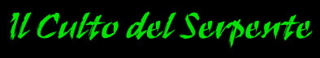
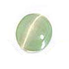
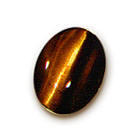
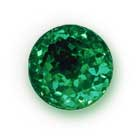
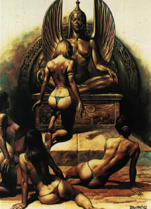
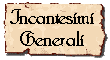
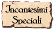
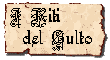

Notizie
Generali
Culto
mistico e misterioso, a volte per certi aspetti di difficile comprensione per
gli stessi esperti di teologia ha origini non ben definite. Secondo alcuni
storici era un culto ben presente già tra i popoli barbari della zona nord-est
del Nordor e le cui radici affondano nelle stesse origini di questi popoli,
comunque iniziò ad assumere un ruolo come vero e proprio culto solo nella fase
della decadenza dell’Impero del Nordor. Per questo motivo molti ritengono che
la sua vera origine sia legata ai misteriosi accadimenti di quel periodo, come
la scoperta di una tomba misteriosa che venne effettuata. Il Serpente
simboleggia la divinità del potere, del potere di classe dei forti sui deboli.
A volte del ricco sul povero, ma spesso i parametri variano a causa della stessa
differenza nel culto fra le interpretazioni dei vari Gran Sacerdoti del
Serpente. Comunque caratteristiche costanti sono lo sfruttamento del debole da
parte del forte e la ricerca del piacere ad ogni costo. I vizi sono quindi
adeguatamente coltivati dai seguaci di questo culto. Da sempre (o quasi)
combattuto dal Tanatanesimo, spesso nelle zone da questo controllate assume la
forma di sette segrete. I Tanatiani perseguitano i seguaci del Serpente spesso
con forme di acuto fanatismo religioso, sono a volte giunti a metterli anche al
rogo. Ha una struttura gerarchica particolare che ne giustifica le diversità e
la non uniformità e omogeneità di dottrina religiosa.
Descrizioni
raffiguranti la Divinità
Un
enorme serpente lungo più di venti metri e largo due, dalla caratteristica
livrea a fasce alternate giallo intenso e nero assoluto. La testa è piatta,
larga e interamente nera. Gli occhi aperti sono iniettati di sangue e assumono
un colore opaco rosso scuro senza che si possa distinguere la pupilla al loro
interno (si dice che siano ricolmi del sangue dei sacrifici, anche umani,
che i chierici eseguono per appannare la vista del loro Dio vendicativo, in modo
da nascondere l’infedeltà degli uomini e evitare che costui li punisca). Il
Serpente ha moltissime lingue triforcute che riempiono le sue fauci. Si racconta
che siano permanentemente ricoperte dai più potenti veleni esistenti.
Semi-dei
e minori
SEMI-DEI : Non esistono, il Serpente non permette a nessuna creatura di porre in dubbio la sua posizione divina....
CREATURE
SACRE MINOR
Le
Serpi Leggendarie : Sono dei leggendari serpenti di dimensione
titaniche, che si dice vivano in eterno e che a volte la divinità utilizzi per
parlare con i propri sacerdoti o per divorare i suoi nemici.
Duty del priest e dei fedeli
I
fedeli sono chiamati vesti in quanto durante i riti indossano una veste con
cappuccio conico colorata diversamente a seconda del loro rango.
I
fedeli sono divisi in tre grandi categorie a seconda del loro ruolo
all’interno del culto .
Alla base della piramide vi sono le vesti nere (i più
infimi). Obbligo delle vesti nere è servire in tutto il culto, la loro
obbedienza è basata sulla paura, spesso sono chiamati anche al sacrificio
volontario e sono soggetti ad ipnosi. Tra le vesti nere si distinguono alcuni
fedeli che si differenziano dalla massa per ricchezza patrimoniale. Queste sono
definite vesti nere agiate
e, nonostante siano sempre vesti nere, ricevono più attenzioni e sono trattate
con maggiori rispetto.
Seguono le vesti azzurre.
Le vesti
azzurre sono persone da tenere particolarmente in considerazione per la loro
potenza, ricchezza, prestanza e bellezza fisica, costoro non sono maltrattati e
partecipano obbligatoriamente ad alcuni riti.
Le vesti rosse anche chiamati Padri Seguaci (si diventa tali se si viene scelti dal capo del culto fra le vesti azzurre dopo una cerimonia in cui la veste rossa ha giurato fedeltà eterna al dio con il suo sangue e dovrà sacrificare con le sue mani una vittima scelta a caso fra i suoi più vicini conoscenti e amici ) hanno invece l’obbligo di divertirsi, partecipare ai riti organizzati come la parte non che subisce ma che ottiene e conoscono bene la struttura del culto.
I chierici,
invece, devono mantenere la supremazia, utilizzando quando occorre la violenza,
il Dio Serpente vuole che tutte le vesti continuino a temerlo e lo venerino
nella paura.
Generalmente
nei riti le scale gerarchiche sono rigorosamente rispettate. Per cui in un rito
tra le vesti nere e le vesti azzurre o rosse , le ultime due sfruttano le prime
, mentre in quelli fra vesti azzurre e rosse le rosse fanno questo sulle azzurre.
Organizzazione
del culto su Arelia
Il
culto manca di una organizzazione globale, ma ha una struttura atipica.
Esistono i Templi Supremi del Serpente , ognuno dei quali ha il controllo totale della religione in una determinata zona di territorio e sulla sua popolazione.
In
ognuno di questi templi il capo culto assoluto è il Gran
Sacerdote del Serpente
che è un chierico di questa divinità che è in grado di tramutarsi in una
raffigurazione del Dio (quando ha raggiunto il 9° livello) . Costui è
pienamente indipendente comanda i rituali sacri e li organizza. Ha la custodia
delle sacre carte. Costui ha diritto di vita o di morte su chiunque sia suo
inferiore come chierico o fedele. Sotto costui si trovano gli Adepti
del Veleno
sono chierici iniziati alla parte avanzata del culto che hanno raggiunto almeno il
3°
livello di esperienza. Si tratta di chierici che
hanno ormai conquistato la fiducia del Gran Sacerdote del Serpente e per questo
sono stati promossi a tale rango. Fra costoro il Gran Sacerdote
sceglie alcuni migliori chierici che assumono il titolo di Adepti del
Veleno Sacro (tranne
in casi particolari si attende il 5° livello di esperienza). Solo agli Adepti
del Veleno Sacro può essere affidata la gestione di un tempio satellite
(denominato Tempio del Veleno),
inoltre costoro possono svolgere i rituali del culto se delegati. I Templi del
Veleno sono templi satelliti al Tempio Supremo del Serpente di cui costituiscono
parte integrante. Sono istituiti per portare la presenza del culto su tutto il
territorio di competenza del Tempio Supremo, per questo motivo sono spesso da
questo distanti.
Al più basso livello della scala gerarchica si trovano, invece, i Figli
del Serpente. Costoro sono sotto il comando degli
Adepti del Veleno e seguono in modo assoluto i loro ordini,
anche se non esiste gerarchia precisa, ciò fa si che spesso sorgano spontanee
coesioni fra vari Figli del Serpente e alcuni Adepti del Veleno causando non
raramente lotte di potere
fra questi ultimi. La grande reverenza, il timore ed il rispetto nei confronti
del Gran Sacerdote permettono la tenuta del sistema.
Quando
un Adepto del Veleno raggiunge un determinato potere e una determinata ricchezza
(che vari a seconda delle sue ambizioni, della zona in cui si trova e del Tempio
Supremo di partenza, ma comunque mai prima del 7° livello di esperienza) può lasciare il
suo Tempio al fine di riorganizzare il
culto altrove per divenire esso stesso Gran Sacerdote di un suo tempio. A questo punto diviene del tutto
indipendente dal Tempio Supremo del Serpente e dal suo Gran Sacerdote.
Proclamatosi a sua volta Gran Sacerdote e fondato un Tempio Supremo del Serpente
ha raggiunto la sua autonomia. Solitamente,
però, fra il nuovo Gran Sacerdote ed
il suo “maestro” restano vincoli di amicizia e collaborazione, in altri casi
invece scoppiano vere e proprie lotte fra vari Templi Supremi del Serpente per
la conquista delle reciproche comunità di fedeli.
Alcuni particolari combattenti che siano stati già veste azzurra possono essere iniziati esclusivamente dal Gran Sacerdote del Serpente come Combattenti del Serpente, costoro divengono eccezionali guardie del tempio e guerrieri sanguinari che si contraddistinguono per avere sullo scudo e sull’elmo il simbolo di sue serpenti incrociati che si guardano. Seguono gli ordini del Gran Sacerdote di cui sono il braccio armato . Se sono particolarmente potenti divengono indipendenti pur rimanendo legati al culto di partenza. Si dice che siano dotati di eccezionali poteri e resistenze ai veleni.
DOVERI DI CONTRIBUZIONE AL TEMPIO SUPREMO
Tutti i ministri del culto hanno il dovere di contribuire al fine di sostenere le spese del tempio. Per tale motivo, costoro comunemente verseranno al Gran Sacerdote del Serpente una percentuale dei loro guadagni lordi come indicato nella seguente tabella (la tabella si riferisce al Tempio Supremo di Pergar essendo possibili variazioni presso diversi templi):
Figli
del Serpente
donazione del 20%
Adepti
del Veleno
donazione del 15%
Adepti del
Veleno Sacro
donazione del 10%
Combattenti
del Serpente donazione del
25%
Si noti che tale contribuzione non sarà dovuta per salari o stipendi pagati dallo stesso Tempio Supremo al ministro religioso.
Anche le vesti hanno l'obbligo di contribuire alla ricchezza del Tempio. In particolare queste contribuiscono con donazioni. Donazioni obbligatorie sono previste per la partecipazione ad ogni singolo rito sacro organizzato dal Tempio di appartenenza. Inoltre, le vesti sono tenute ad effettuare una donazione annuale nel mese di Norio al loro Tempio. Questa donazione dipende dal colore della veste e può variare a seconda del Tempio Supremo. In ogni caso questa donazione non può superare i valori massimi indicati nella seguente tabella:
Veste Nera
5 monete d'oro
Veste Nera Agiata
100 monete d'oro
Veste Azzurra
250 monete d'oro
Veste Rossa
1000 monete d'oro
Materiale
sacro alla divinità
Arcanite : Questa lega metallica, di produzione alchemica, per le sue caratteristiche tossiche è sacra al dio Serpente. I fedeli, i chierici ed i combattenti spesso utilizzano armi forgiate in questo materiale per ingraziarsi la benevolenza della divinità.
Gemme
sacre alla divinità
| Pietra Ornamentale |
Pietra Preziosa |
Gemma Rara |
| CRISOBERILLO | OCCHIO DI TIGRE | SMERALDO |
|
 |
 |
 |
Simboli
fondamentali del culto
Medaglione
del Serpente : Vero
e proprio simbolo sacro del culto, è un medaglione circolare con
scolpito il simbolo dei due serpenti che si incrociano, è di bronzo per i Figli
del Serpente (8 g.p.) e di argento gli Adepti del Veleno (30 g.p.), quello del
Gran Sacerdote ha invece proprio la forma dei serpenti a tutto rilievo ed è
ricco di gemme, può essere di qualsiasi materiale ma il suo valore non deve
essere inferiore a 5000 monete d'oro.
Maschera del Serpente : E’ la maschera che indossano nelle celebrazioni che presiedono i chierici, è costruita in modo da rendere la loro voce irriconoscibile e tenebrosa. E’ interamente scolpita in rilievo con piccoli serpenti e costa circa 150 g.p. (si noti che le Serpentidi non hanno il dovere di utilizzarla).
Testa
del Serpente : E’ praticamente una zona sacra che deve esistere in ogni Tempio Supremo del
Serpente. Si tratta di una enorme scultura raffigurante la testa di un serpente
con le fauci spalancate, il tipo di serpente varia da tempio a tempio e lo
contraddistingue. Il Gran Sacerdote siede durate i riti nelle fauci e di solito
nella gola vi è un passaggio che porta nelle sale riservate al Gran Sacerdote,
da cui costui entra ed esce. Tutti devono inchinarsi al Gran Sacerdote che si
trova nella bocca del serpente fino a che costui non darà il permesso di
alzarsi. Nella bocca vi deve sempre essere un braciere acceso (che costituisce
il focus).
Le Squame Sacre : E’ la veste sacra che indossano i sacerdoti , è praticamente una sorta di armatura di scaglie , formata da scaglie di serpenti, è però leggera e si applica sopra una normale armatura. Le scaglie ricoprono solo il torso mentre le gambe e le braccia sono ricoperte da un manto nero. Una veste economica costa almeno 50 gp. I chierici cercano sempre di farsela costruire con pelli di serpenti rari e velenosi, magari mostri giganti, in modo da ingraziarsi il loro Dio .
La
Staffa del Serpente :
Insieme alla
maschera è indossata solo da quei chierici che dirigono i riti e quando li
dirigono . Ha praticamente la forma scolpita di un serpente ed è interamente di
argento massiccio, il suo valore deve essere di minimo 15 g.p. per livello di
esperienza del chierico.
Kulish
: E’ il
pugnale rituale d’argento con lama lunga 30 cm. ed incredibilmente
ondulata, con sopra incisioni sacre. Può essere impugnato solo dai chierici e
dalle vesti rosse che lo usano per terminare la vita nei sacrifici in onore alla
Divinità. Ha un costo non inferiore a 150 g.p. e statistiche proprie del Bone
Dagger.
Tamburi rituali : Tamburi in pelle umana e suonati anche con ossa umane . Servono nei riti per fare andare in trance e scandire i ritmi del rito sono suonati sempre da vesti nere. E costano circa 24 g.p. la coppia.

Schema
di gioco per i p.g.
Allineamento
del Culto
Divinità
: Neutral Evil
Chierici
: Tutti tranne Good
Seguaci
: Qualsiasi allineamento
Schema per i Chierici del Serpente :
Abilità
minime richieste
Saggezza
10 ( con 16 o + = + 10% Xp )
Razze
permesse
Umana, Serpentide
NonWeapon
Proficiencies
(priest,
general)
Bonus
=
Required
= Religion
Raccomandate
= Reading\Writing , Healing
Weapon
Proficiencies
Required
= Nessuna
Armi
e armature permesse
Armature:
Tutte le corazze di tessuti, la scale mail e qualsiasi armatura di scaglie (es.
corazza di pelle di drago e corazza di lizard man).
Scudi: Rotella, Scudo Piccolo
Armi
da Tiro: Balestra Leggera
Spade:
Bastard
Sword (one or two handed)
Asce: Shoka
Pugnali: Bone Dagger,
Khanjar, Needle Dagger
Flagelli: Iron Whip
Altre Armi: Frusta da
Guerra
Momento di flusso dell'energia divina: Il momento utilizzato dal Serpente è l'inizio della notte (ore 21.00).
Poteri speciali
Creare l'Acqua Sacra del Serpente a partire dal grado di Adepto del Veleno
Creare minor enchantments a partire dal 4° livello
Creare pergamene magiche a partire dal 1° livello
Creare pozioni magiche a partire dal 9° livello
Creare oggetti magici a partire dal 12° livello
Resistenza al Veleno : Tutti i chierici del Serpente sono immuni agli effetti dei veleni di qualsiasi serpente appartenga alla tipologia Snake Poisonous Common o Snake Poisonous Giant, inoltre ottengono un bonus di +2 ai tiri salvezza contro qualsiasi altra forma di veleno (ivi compreso il veleno di serpenti mostruosi non appartenenti alle suddette categorie).
Al 3° livello - Produzione di Veleni : Tutti i chierici del Serpente possono utilizzare la competenza Alchemy e la competenza Herbalism unicamente per la produzione di veleni, nonostante non abbiano acquistato tale competenze. Costoro dovranno utilizzare il loro punteggio di saggezza per effettuare le prove di produzione (non ottenendo, però, eventuali bonus alla prova dovuti al punteggio di intelligenza posseduto). Si noti, però, che la competenza Herbalism non può essere utilizzata (qualora non posseduta) per effettuare la ricerca delle erbe. Qualora i chierici del Serpente posseggono la competenza Alchemy od Herbalism costoro ottengono un bonus di +2 a tutte le suddette prove relative alla produzione dei veleni (slot supplementari non portano alcun beneficio).
Al 5° livello - Incutere Paura : Una volta raggiunto il quinto livello di esperienza i chierici del Serpente possono memorizzare gratuitamente e senza che sia considerato ai fini del numero massimo di incantesimi memorizzabili per livello un incantesimo di Cause Fear. Quando utilizza la magia attraverso questo potere speciale, inoltre, il chierico del Serpente impone una penalità di -1 al tiro salvezza della vittima e la durata della magia sarà considerata pari ad 1d4 round.
Al 7° livello - Controllo dei Serpenti : Una volta raggiunto il settimo livello di esperienza i chierici del Serpente possono provare a sottoporre al loro fascino divino qualsiasi serpente appartenente alle seguenti categorie: Snake Poisonous Common/Giant, Snake Constrictor Common/Giant. Il chierico può provare ad effettuare il controllo mostrando i propri simboli ed invocando l'intervento della divinità, questa azione richiede un intero round nel quale il chierico deve poter rimanere concentrato (si considera come in fase di lancio di un incantesimo) e deve trovarsi entro 15 metri dalla creatura. Al termine del tentativo il serpente dovrà superare un tiro salvezza contro incantesimi mentali, se lo supera sarà infuriato nei confronti del chierico (il quale non potrà mai più provare a controllarlo con questo potere), se invece lo fallisce sarà permanentemente affascinato dal chierico del Serpente che potrà instaurare con lui un collegamento telepatico. Sebbene il serpente non potrà parlare, potrà ricevere i comandi del chierico (che applicherà le regole utilizzate per comandare le creature convocate magicamente) lo servirà nei limiti della propria intelligenza e capacità. Il Chierico dovrà prendersi cura del serpente, dandogli un luogo ove vivere ed occupandosi di nutrirlo (si tratta di un vero e proprio compito religioso). Il chierico potrà avere anche più di un serpente sotto comando in questo modo, ma in nessun caso potrà avere sotto controllo un numero di Dadi Vita di serpenti (singolarmente o collettivamente considerati) superiori al proprio livello di esperienza. In ogni momento con un comando telepatico (deve trovarsi a 15 metri dall'animale) il chierico potrà liberare un serpente dal proprio controllo per prenderne uno nuovo, in questo caso il serpente liberato non sarà aggressivo ma farà di tutto per riottenere la libertà (se gli e' impedito diventerà immediatamente aggressivo).
Al 9° livello - Trasformazione nella Sacra Serpe : Una volta raggiunto il nono livello di esperienza i chierici del Serpente possono trasformarsi, una volta per ogni flusso di energia divina, in un grosso serpente appartenente alla categoria Snake, Constrictor Giant di nove dadi vita (link). La trasformazione richiede un intero round durante il quale il chierico del Serpente sarà considerato stordito (stunned). Il chierico del Serpente non può effettuare la trasformazione quando è per qualsiasi motivo ingombrato. Tutti gli oggetti del chierico si trasformeranno con esso fondendosi nel nuovo corpo. Gli effetti di eventuali oggetti magici indossati saranno temporaneamente sospesi per la durata della trasformazione. Gli effetti magici ai quali il corpo del chierico era sottoposto prima della trasformazione continueranno ad avere effetto solo se compatibili con la nuova forma acquisita. Alla fine del round di utilizzo del potere il chierico si sarà trasformato nella suddetta creatura. Quando il chierico assume la forma di Serpente costui rigenererà parte delle proprie ferite curandosi 1d6+1 punti ferita per livello di esperienza raggiunto (La cura ha un effetto rigenerativo riuscendo a curare anche ferite causate dall’acido ma non rimuove, di per sé, effetti di colpi critici anche se l'ammontare di punti ferita curati possono essere direzionati, anche parzialmente, dal chierico alla cura dei punti ferita potenziali necessari per rimuovere gli effetti dei critici). Una volta trasformato, il chierico acquisterà il fisico della nuova creatura e le sue statistiche fisiche (forza, destrezza e costituzione), acquisterà la classe armatura della creatura, le modalità ed il fattore movimento della creatura, la Thac0 della creatura, le modalità di attacco fisico della creatura nonché le abilità speciali della creatura. Ovviamente il chierico non sarà in grado di parlare né di lanciare incantesimi in forma di serpente. Il chierico manterrà i propri punti ferita le proprie statistiche mentali. Una volta trasformatosi il chierico deve restare nella forma di serpente per almeno 1 ora, trascorsa la quale potrà ritrasformarsi (utilizzando le stesse regole di cui sopra) di nuovo nella sua forma originale. La trasformazione non può essere dissolta magicamente da una magia di Dispel Magic. Il chierico può, però, essere costretto ad assumere la sua forma originaria da una magia di Wish o Limited Wish. Quando il chierico è obbligato a ritrasformarsi, al raggiungimento del successivo momento di flusso di energia divina del Serpente, nonché quando il chierico muore o va in coma costui si ritrasformerà automaticamente nella sua forma originaria alla fine del round in cui l'evento si verifica.
Incantesimi
Gli incantesimi concessi dal Serpente sono incantesimi lesivi di combattimento, a volte di potenziamento, che hanno a che fare con le essenze venefiche e che riguardano il controllo delle menti dei deboli.
Incantesimi generali
| 1° LIVELLO DI POTERE |
| BATTLEFATE |
| CAUSE FEAR |
| CALL UPON FAITH |
| COMBINE |
| COMMAND |
| DETECT MAGIC |
| DETECT POISON |
| MALISON |
| PROTECTION FROM GOOD |
| 2° LIVELLO DI POTERE |
| AID |
| CHAOS WARD |
| CHARM PERSON |
| IRON VIGIL |
| SANCTIFY |
| SLOW POISON |
| SNAKE CHARM |
| 3° LIVELLO DI POTERE |
| BESTOW MINOR CURSE |
| DEATH'S DOOR |
| DICTATE |
| DISPEL MAGIC |
| GLYPH OF WARDING |
| PROTECTION FROM GOOD 10' radius |
| 4° LIVELLO DI POTERE |
| CLOAK OF FEAR |
| FOCUS |
| NEUTRALIZE POISON |
| POISON |
| ROD TO SNAKE |
| 5° LIVELLO DI POTERE |
| HOLY FAVOR |
| IMPREGNABLE MIND |
| SENTINEL OF FAITH |
| SOUL MERGING |
| WORD OF PAIN |
Incantesimi speciali (Unici della divinità)
| 1° LIVELLO DI POTERE |
| ACCURATE STRIKING |
| ARCANITE CONSACRATION |
| SERPENT CONSTRICTION |
| SNAKE REGENERATION |
| 2° LIVELLO DI POTERE |
| NAUSEA |
| POISON VULNERABILITY |
| POISONOUS BLADE |
| SUMMON SNAKE |
| 3° LIVELLO DI POTERE |
| ARMOUR OF THE SNAKE |
| ENSLAVERY |
| REPTILE REGENERATION |
| SERPENT ARROW |
| 4° LIVELLO DI POTERE |
| ENHANCE CEREMONY |
| SNAKE SKIN |
| SUPERIOR POISONOUS BLADE |
| VALOR |
| 5° LIVELLO DI POTERE |
| INCREASED REGENERATION |
| POISONOUS CLOUD |
| RESILIENCE TO POISON |
| VIPER'S STRIKE |
  